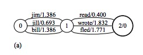
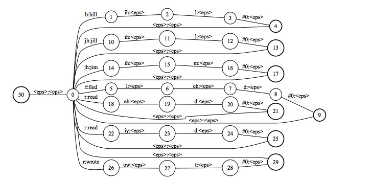
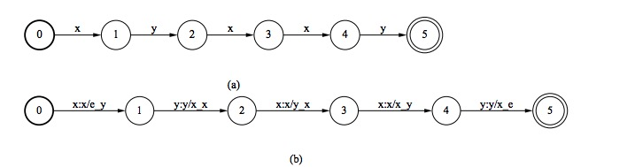
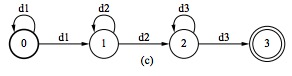

语音识别解码器简单简介
本篇文章介绍语音识别的解码器部分。解码器的作用是得到输入的语音的最优结果，即文本。当前最流行的方法是使用WFST的解决方案。
WFST
WFST定义的是一种有向图。图的边有输入label，输出label，权重。它有最初的输入状态，有最终的结束状态。
深入理解什么是WFST是认识语音识别解码器的关键。下面一组视频专门讲解WFST的相关概念和算法的视频。通过这个视频，你可以非常清晰完整地认识有关WFST的内容。
重点认识两个方面的内容。
- 概念：半环的概念，FSA，FST，WFST，WFSA的概念。
- 算法：Composition，Determinization，Minimisation。
如果想要更加深入了解WFST的相关内容，Moris的经典论文《Speech Recognition with Weighted Finite-state Transducer》是必读的。
三大操作
WFST在语音识别解码器中有三个重要的操作，这三个操作在构建解码器的时候发挥着各自的作用。
- Composition：把两个WFST合成。假设有一个WFST，称为A，另一个，称为B。A的输出值是B的输入值，那么合成就是把中间部分”合并“掉，生成一个WFST。这个WFST让A的输入转化成B的输出。
- Determinization: 同一个状态输出的转化中，一个输入label只能有一个输出label。
- Minimisation: 简化当前的WFST，去除冗余的转化。这个操作之后的WFST与之前的保持等价。
语音识别
WFST在解码器中的运用就是HCLG。这是Kaldi的实现方案。这个方案把HMM结构，上下文相关的音素，词音素和语法结合起来。这样，把输入的语音帧直接映射为语句，把每一个环节的影响加入了模型当中。
HCLG的合成公式如下：
理解这一条公式需要先了解其中每一个WFST是什么样子的。
G：使用n-gram把词汇通过概率组合起来的一个FSA。

L：lexicon的一个FST。如果有同音词，就通过在词的lexicon后面#1，#2来消歧义。这个FST将音素映射到词汇上。

C：把有上下文的triphone模型映射到monophone模型，即音素上面。

H：把HMM的状态映射到上下文相关triphone模型上去。

通过上面的公式，就成功把一个输入的triphone模型映射到句子上。如果有连续的一个语音串，就可以生成相关的句子。
如何解码
有了这个HCLG，如何解码？
首先，假设输入的语音有T帧，我们将之构建成T+1的状态的WFSA。边上的信息是上下文相关的HMM模型和相关的log likelihood。把这一个WFSA和已经有的HCLG进行合并得到一个图。这个图叫做搜索图。而解码的过程就相当于在这个搜索图里面寻找最优路径。可以使用维特比算法加上剪枝来寻找最优路径。
（下面一段话参杂了自己的理解，可能不是很准确。）
而在Kaldi的实现中，合成的搜索图的边信息需要包括图损耗(graph cost)和语音损耗(acoustic cost)。实际操作中，对每一个HCLG的边，计算每一帧的语音损耗。每过25帧进行一次剪枝。最后得到一个lattice，记为P。把P输入输出翻转，得到Q。翻转的目的是为了对每个词序列里的词都保留最佳的路线（此时的Q输入是单词，输出是一个一个概率分布），保留最好的分割方案。然后再编码为E。最后进过一些优化，就可以得到最后的L。L的每一条路径都是当前语音输入的可能结果。
对于该过程不清晰可以查阅这一篇论文：《Generating exact lattices in the WFST framework》。
文章如果有什么错误的地方，欢迎指正，非常感谢。